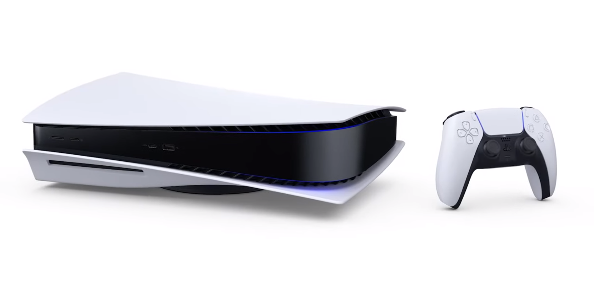

A PlayStation 5 (rövidítve PS5) egy kilencedik generációs videojáték-konzol, amelyet a PlayStation 4 utódjaként jelentettek be 2019-ben. A konzolt a Sony Interactive Entertainment fejlesztette. A PS5 2020. november 12-én jelent meg Ausztráliában, Japánban, Új-Zélandon, Észak-Amerikában, Szingapúrban és Dél-Koreában, egy héttel később pedig világszerte is megjelent.
Mark Cerny kétéves visszajelzés-ciklust indított el a PlayStation 4 megjelenése után. Többször is meglátogatta a Sony fejlesztőit, hogy megtalálja, milyen hibák voltak a Sony hardverében, és hogyan lehetne fejleszteni ezt a hardvert a következő generáció számára. A PS5 fejlesztésében fontos probléma volt a játékok betöltésének ideje. Egy fontos cél az volt, hogy le tudják csökkenteni a betöltési időt, főleg olyan játékok esetén, amelyek dinamikusan töltenek be új játékterületeket. Jim Ryan, a Sony Interactive Entertainment elnöke azt mondta, hogy a Sony gondolkozott a PlayStation 5 olcsóbb verzióján, de végül arra jutottak, hogy ezek a konzolok hamarabb elavulnak.
AMD Zen 2 variáns,változó sebeséggel, max. 3.5 GHZ
SSD, 825 GB (bővíthető)
16 GB GDDR6 SDRAM
512 MB DDR4 RAM (háttérfolyamatokhoz)
Grafikus vezérlő AMD RDNA 2 variáns (32 CU) max. sebesség 2.23 GHZ, kimenet: HDMI 720p, 1080i, 1080p, 4K UHD, 8K UHD
Hang Tempest Engine 3D Audio variáns, Dolby Atmos és DTS-X (Blu-ray és UHD Blu-ray videóhoz), 7.1 surround
András Márk Balázs